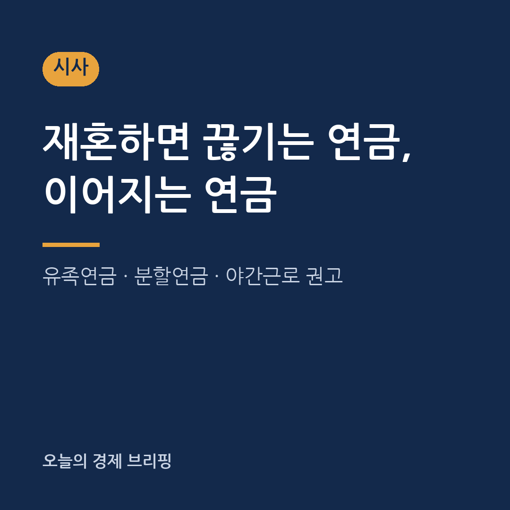
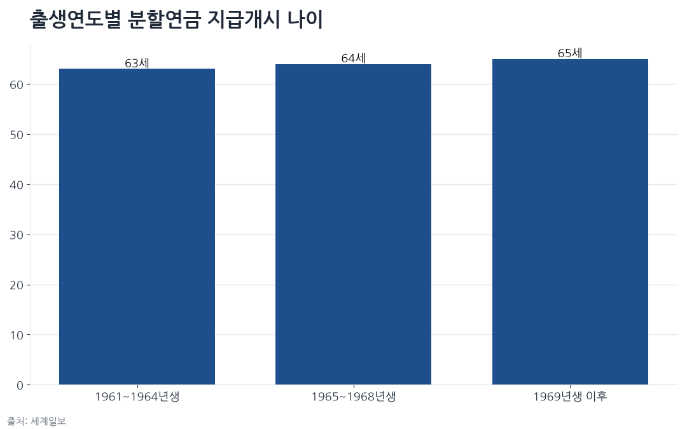

2026-11-28-1134-naver 발행 키트 · 이 페이지는 검색에 노출되지 않습니다.
제목
카테고리
시사태그
본문 (그림·표 포함)
휴대폰 블로그 앱에서는 그림이 같이 붙지 않을 수 있어요. 그때는 [글자만 복사] 후 아래 이미지를 저장해 [그래프1]·[표1] 자리에 첨부하세요.

같은 국민연금인데 사별했을 때와 이혼했을 때 받는 방식이 이렇게 다른 줄 아셨나요? 막상 내 일이 되기 전에는 잘 안 찾아보게 되는 내용이라, 오늘 차분히 정리해 봤어요.
그리고 밤에 일하시는 분들이 눈여겨볼 소식도 하나 같이 담았어요.
▶ 사별하면 유족연금, 이혼하면 분할연금
먼저 이름부터 헷갈리기 쉬워요. 유족연금(배우자가 세상을 떠났을 때 남은 가족이 받는 연금)과 분할연금(이혼한 배우자의 노령연금을 혼인기간만큼 나눠 받는 연금)은 출발점이 완전히 달라요.
가장 큰 차이는 재혼했을 때예요. 유족연금은 다시 혼인하면 받을 권리 자체가 사라져요. 분할연금은 재혼을 해도 그대로 이어져요.
유족연금과 분할연금 비교
| 구분 | 유족연금 | 분할연금 |
|---|---|---|
| 어떤 연금 | 배우자 사별 시 유족이 받음 | 이혼한 배우자 노령연금을 나눠 받음 |
| 재혼하면 | 수급권 소멸(사실혼 포함 가능) | 그대로 유지 |
| 내 노령연금이 생기면 | 둘 중 하나 선택 | 합산해서 받음 |
출처: 세계일보
▶ 사실혼도 재혼으로 볼 수 있어요
여기서 놓치기 쉬운 게 하나 있어요. 유족연금은 혼인신고를 하지 않고 함께 살아도 재혼으로 판단될 수 있대요.
그래서 새로운 만남을 앞두고 계신 유족연금 수급자라면, 어떤 형태로 함께 살지 정하기 전에 국민연금공단에 먼저 문의해 보시는 게 좋아요.
분할연금은 반대로 재혼과 상관없이 유지되는데요. 한 가지 예외가 있어요. 이혼했던 그 배우자와 다시 혼인하는 경우에는 본인이 원할 때 포기 신청을 할 수 있어요.
▶ 내 노령연금이 생기면 어떻게 될까요
본인 몫의 노령연금이 나오기 시작하면 두 연금의 처리도 갈려요.
분할연금은 내 노령연금에 그냥 더해서 받아요. 반면 유족연금은 내 연금과 둘 중 하나만 고르는 구조예요. 내 연금을 고르면 유족연금액의 30%를 더해서 받을 수 있고요.
▶ 분할연금은 아무나 받는 게 아니에요
분할연금에는 조건이 있어요. 혼인기간이 5년 이상이어야 하고, 이혼한 상태여야 하고, 전 배우자가 노령연금을 받을 수 있는 사람이어야 해요.
여기에 내가 지급개시 나이에 도달해야 해요. 출생연도에 따라 나이가 다르니 아래 그래프로 확인해 보세요.

금액은 기본적으로 혼인기간에 해당하는 연금액의 절반이에요. 2016년 12월 30일 이후 사유가 생긴 경우라면 협의나 재판으로 비율을 달리 정할 수도 있어요.
▶ 밤샘 근무, 연속 3일까지만 하자는 권고
두 번째 소식은 일터 이야기예요. 고용노동부가 야간근로에 대한 권고안을 곧 발표할 예정이라고 해요. 보도 기준으로는 아직 발표 전이에요.
핵심은 연속으로 야간근무를 하는 날을 3일 이하로 관리하자는 거예요. 야간시간은 밤 10시부터 아침 6시까지인데, 그중 자정부터 새벽 4시까지는 따로 떼어 초심야시간대로 관리한다고 해요.
야간근로 권고안 핵심 정리
| 항목 | 내용 |
|---|---|
| 연속 야간근무 | 3일 이하로 관리 |
| 초심야시간대 | 자정부터 오전 4시까지 별도 관리 |
| 대상 | 근로기준법·산업안전보건법 적용 사업장(새벽배송 제외) |
| 구속력 | 권고안이라 법적 강제 없음 |
출처: 세계일보
▶ 누가 해당되고, 꼭 지켜야 하나요
대상은 근로기준법과 산업안전보건법이 적용되는 사업장이에요. 제조업이나 병원, 경비처럼 야간 작업이 있는 곳이 중심이에요. 새벽배송은 이번 권고안에서 빠져요.
다만 이름 그대로 권고라서 법으로 강제되는 건 아니에요. 야간근무 뒤에 충분히 쉴 시간을 주고, 건강 때문에 낮 근무로 바꿔 달라고 했을 때 불이익을 주지 않도록 하는 내용도 담긴다고 해요.
▶ 확인해 보면 좋은 점
연금은 국민연금공단에 내 상황을 말하고 정확한 수급 가능 여부를 확인하는 게 가장 확실해요. 야간근로는 정식 발표 때 세부 내용이 달라질 수 있으니 발표문을 한 번 더 봐 주세요.
오늘 내용 한 줄 정리, 사별은 재혼하면 끊기고 이혼은 재혼해도 이어지며, 밤샘 근무는 연속 3일 이하가 권고 방향이에요.
혹시 주변에 이 차이를 몰라서 당황하셨던 분이 계셨나요? 댓글로 나눠 주시면 다른 분들께도 도움이 될 거예요.
이미지 (개별 복사·저장)
출처 (본문 맨 아래에 붙여넣기 권장)
- 세계일보, 재혼하면 끊기는 유족연금, 이혼 뒤 분할연금은 그대로…국민연금은?, https://www.segye.com/newsView/20261128503192 - 세계일보, 정부, '연속 야간근로 3일 이하 제한' 추진…초심야 별도 관리, https://www.segye.com/newsView/20261127513505